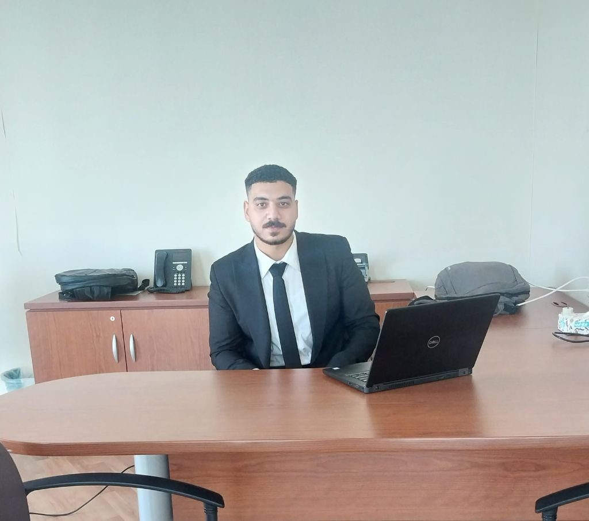

ERP • Finance Systems • Audit
Majed Muhammed Rashad Shaker
ERP Financial Consultant with Audit & IFRS Expertise
Based in Jeddah, Saudi Arabia, I help organizations implement and optimize Oracle-based ERP financial solutions with a strong foundation in external audit, IFRS, business analysis, data migration, user training, and go-live support.
- Location: Sharafia, Jeddah, Saudi Arabia
- Email: magedshaker101@gmail.com
- Phone: +966 575174781 · +966 534695122
- LinkedIn: linkedin.com/in/majed-muhammed

Saudi Arabia Based
4+
ERP projects led
60+
Users trained
DipIFR
ACCA certified
CPA
Candidate
About Me
Professional Profile
ERP Financial Consultant with 2+ years of experience implementing finance-focused ERP systems across General Ledger, Accounts Payable, Accounts Receivable, Fixed Assets, Inventory, Banking, HR, and Logistics.
My background combines hands-on ERP implementation with external audit exposure, giving me a practical understanding of finance operations, internal controls, and IFRS-aligned reporting requirements.
Target Roles
- ERP Functional Consultant
- Finance Systems Specialist
- Senior Accountant
- Financial ERP Consultant
- Audit / Reporting Roles
Experience
Professional Journey
ERP Financial Consultant & Implementer
Ultimate Solution for Computer Business
Jeddah, Saudi Arabia
- Led 4+ ERP implementation projects from business analysis through go-live across real estate, trading, and commercial sectors.
- Configured Oracle-based ERP modules including GL, AP, AR, Inventory, Fixed Assets, HR, and Logistics.
- Designed chart of accounts, cost centers, VAT setup, fiscal years, permissions, and financial reporting structures.
- Managed data migration for opening balances, customers, vendors, inventory items, and fixed assets.
- Delivered training to 60+ end users and supported UAT, customization validation, and post-go-live stabilization.
Associate Audit 1
UHY United for Audit, Tax and Financial Service
- Performed audit fieldwork in accordance with International Standards on Auditing (ISA).
- Prepared financial statements, audit working papers, and analytical review schedules.
- Evaluated IFRS compliance, including IFRS 16 lease liabilities and fixed assets.
- Tested balances and transactions using substantive procedures and reviewed related party transactions, provisions, and operating expenses.
Audit Intern
Baker Tilly Egypt
Egypt
- Reviewed financial statements for accuracy, classification, and compliance with accounting standards.
- Supported audit work on payments, cash and cash equivalents, and foundational review procedures.
- Gained exposure to securitization review processes and practical audit workflows.
Skills
Core Expertise
ERP & Functional
Finance & Audit
ERP Modules
Tools & Systems
Credentials
Education & Certifications
Education
Ain Shams University
College of Business, English Section
Bachelor of Business in Accounting & Finance
2019 – 2023 · Grade: Very Good (80%)
DipIFR
ACCA Diploma in International Financial Reporting
Awarded: January 2023
Passed December 2022 session · Score: 66 · Reg. No. 5556317
CPA Evaluation
FACS · Guam jurisdiction
U.S. equivalency: Bachelor’s degree
150+ semester hours with required accounting and business credits
Languages
Arabic — Native
English — Excellent
Driving License — Valid
Documents